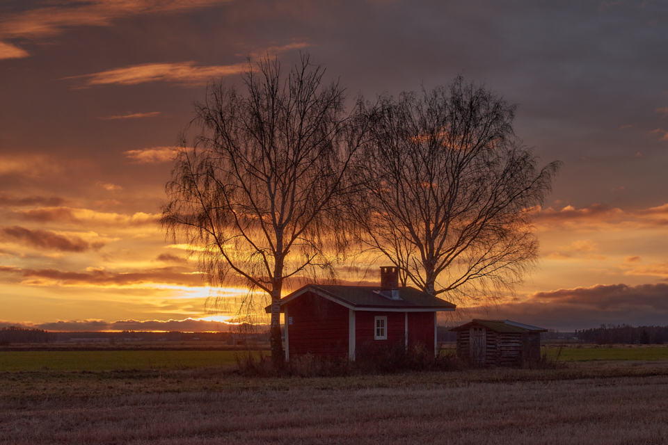

Kari Peräsalo.Asun Lapualla.
Opiskelen tällä hetkellä Etelä-Savon Ammattiopistossa Tieto ja viestintätekniikkaa. Opiskelu toteutetaan verkko-opintoina.Opinnot kestävät n. 2.5 vuotta.
Harrastan valokuvausta. Kamera on kulkenut mukanani jo seitsemän vuotta. Pääasiassa kuvaan lintuja ja maisemia. Siinä samalla sitten lintubongausta.Ennätykseni on 161 kuvattua lintulajia joka on tältä vuodelta.
Olen työskennellyt Atrialla 34 vuotta.Tällä hetkellä olen ammatillisessa kuntoutuksessa mutta sopimukseni on edelleen voimassa Atrialla.